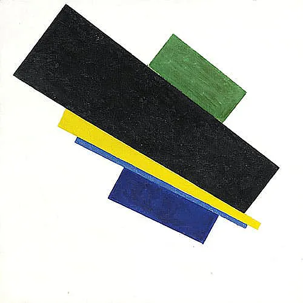
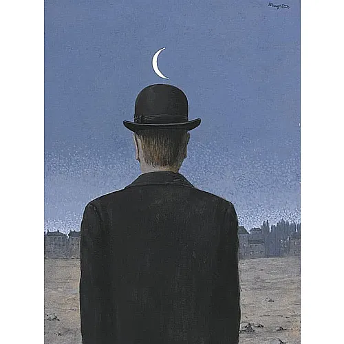

表现主义
立体主义
野兽主义
未来主义
超现实主义
点描主义
印象主义
欢迎来到艺术流派主页
在这里，您可以探索各种艺术流派的精彩世界。
小览
表现主义

立体主义
野兽主义
未来主义

超现实主义
点描主义
印象主义
画廊链接
表现主义，1905到1940年代以德国为中心表现主义为一种艺术风格，它不复制题材的精确性，而用艺术家内心状态的陈述作为描绘的主题，此活动与象征主义Symbolism、野兽派Fauvism和立体派Cubism等皆有所关联。
立体主义，1908到1920的欧洲立体派由毕卡索PabloPicasso和布拉克GeorgesBraque于1908到1912间所发展出来，此活动本身并没有存留长久及广泛散布，但它却在20世纪艺术界里爆发巨大的共鸣。
野兽主义，是自1905至1908年在法国盛行一时的美术流派。野兽派画家热衷于运用鲜艳、浓重的色彩，充分显示出追求情感表达的表现主义倾向。
未来主义，1909到1914于意大利未来派是意大利现代主义者的活动，用以庆祝技艺时代的来临，它由立体派得到主要的灵感，未来主义者思考及艺术的核心题材为机械与动作。
超现实派，源于达达主义，于1920年至1930年间盛行于欧洲文学及艺术界中。艺术上的表现以探索潜意识中的矛盾为主，如生与死、过去和未来等。
点描主义，1880年代于法国点描派为一种绘画的类型，用极微小的主色打点作为辅助的色彩，为印象主义的分枝，通常和后期印象主义是有所分别的。
印象主义，1860到1880年代集中、开始于法国的印象主义，用光与自然的方式运用到绘画上，作为反抗学院风格所支配的形式主义，其主题的自然论调和实际论述，是根源于柯洛及其他的法国写实主义者。
猜猜这幅画，属于哪个艺术流派?
开始